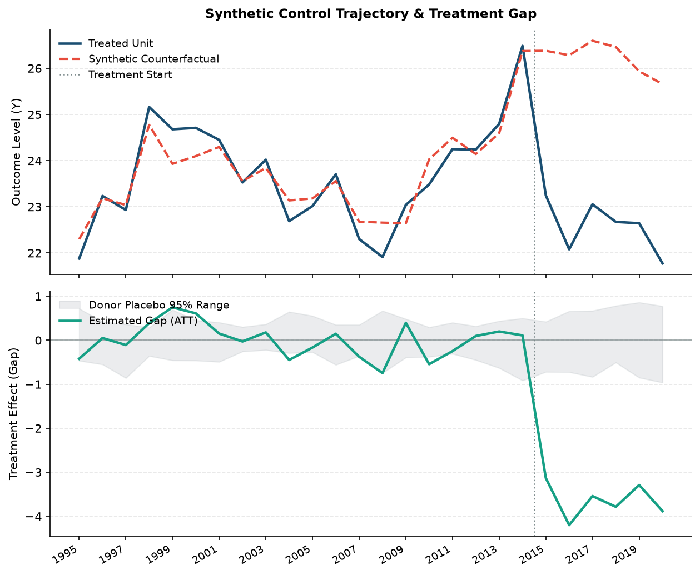

Synthetic Control, SDiD & Augmented SCM
Classic outcome-only SCM, intercept-centered Synthetic DiD with sparsification, Ben-Michael–Feller–Rothstein Ridge ASCM, and Chernozhukov–Wüthrich–Zhu conformal intervals.
SDiD ATT (True = -4.0)
-3.694
90% Conformal [-4.25, -2.96]
Ridge ASCM ATT
-3.705
90% Conformal [-4.63, -2.41]
Classic SCM Gap
-3.812
Pre-RMSPE = 0.29 (offset bias)
Primary SE Policy
None (Honest)
Opt-in CWZ conformal CI
Level Offsets & Convex Hull Failures
Here
TargetState sits +2.2 units above its donor convex hull. Uncentered classic SCM cannot absorb that offset (pre-RMSPE = 0.29, gap = -3.81), whereas intercept-centered SDiD (-3.69) and Intercept-Shifted Ridge ASCM (-3.70, weights summing identically to 1.000000) recover the true -4.00 effect cleanly.1. Comparing SCM, SDiD & Augmented SCM
SCM, SDiD, Augmented SCM & CWZ Conformal Inference
import quasi
# 1. Classic outcome-only SCM (point-only; exposure audited via treatment=)
scm = quasi.estimate(
df_syn,
design=quasi.SyntheticDesign(
outcome="consumption", unit="state", time="year", treated_unit="TargetState",
intervention_time=2015, estimator="scm", treatment="treated", n_placebos=8,
),
)
# 2. Synthetic DiD (intercept-centered, R-style sparsification)
sdid = quasi.estimate(
df_syn,
design=quasi.SyntheticDesign(
outcome="consumption", unit="state", time="year", treated_unit="TargetState",
intervention_time=2015, estimator="sdid", treatment="treated", sparsify="default", n_placebos=8,
),
)
# 3. Intercept-shifted Ridge-Augmented SCM (Ben-Michael, Feller & Rothstein 2021)
ascm = quasi.AugmentedSCM(
df_syn, outcome="consumption", unit="state", time="year",
treated_unit="TargetState", intervention_time=2015, treatment="treated",
).fit()
# 4. Chernozhukov, Wuthrich & Zhu (2021) full-series Moving-Block Conformal 90% CIs
ci_sdid = sdid.conformal_interval(alpha=0.10)
ci_ascm = ascm.conformal_interval(alpha=0.10)Classic SCM : gap = -3.812, pre-RMSPE = 0.290 (level offset outside convex hull)
SDiD : ATT = -3.694, pre-RMSPE = 0.378, 90% Conformal CI = [-4.249, -2.956]
Ridge ASCM : ATT = -3.705, pre-RMSPE = 0.262, 90% Conformal CI = [-4.631, -2.408]
ASCM weight sum = 1.000000, min weight = -0.0006, lambda = 1112
SCM in-time placebo (2005): gap = +0.005
Figure 4. Treated vs. synthetic counterfactual trajectory (top) and intercept-centered treatment gap against donor placebo 95% band (bottom), rendered via
sdid.plot().2. Donor Weights & Leave-One-Donor-Out Sensitivity
| Donor | SCM Weight | SDiD Weight | ASCM Weight |
|---|---|---|---|
| State_01 | 0.3911 | 0.1362 | 0.7498 |
| State_02 | 0.0000 | 0.1118 | 0.2507 |
| State_03 | 0.0000 | 0.0770 | -0.0001 |
| State_04 | 0.0000 | 0.0821 | 0.0000 |
| State_05 | 0.0000 | 0.0735 | 0.0001 |
| State_06 | 0.0000 | 0.0594 | -0.0000 |
| State_07 | 0.0000 | 0.0997 | 0.0001 |
| State_08 | 0.0000 | 0.0621 | -0.0003 |
| State_09 | 0.0000 | 0.0353 | -0.0000 |
| State_10 | 0.2025 | 0.0948 | 0.0002 |
| State_11 | 0.0000 | 0.0513 | -0.0006 |
| State_12 | 0.4064 | 0.1169 | 0.0002 |
| excluded_donor | post_average_gap | pre_rmspe | difference_from_full |
|---|---|---|---|
| State_01 | -3.7328 | 0.3439 | 0.0791 |
| State_02 | -3.8119 | 0.2900 | 0.0000 |
| State_03 | -3.8119 | 0.2900 | 0.0000 |
| State_04 | -3.8119 | 0.2900 | 0.0000 |
| State_05 | -3.8119 | 0.2900 | 0.0000 |
| State_06 | -3.8119 | 0.2900 | 0.0000 |
| State_07 | -3.8119 | 0.2900 | 0.0000 |
| State_08 | -3.8119 | 0.2900 | -0.0000 |
| State_09 | -3.8119 | 0.2900 | 0.0000 |
| State_10 | -3.7332 | 0.3023 | 0.0787 |
Exploratory single-treated-unit Synthetic Difference-in-Differences (Arkhangelsky et al., 2021). Unit and time simplex weights used an unpenalized intercept and regularization scaled by the control first-difference noise estimate. R synthdid-style weight sparsification was applied. Point effect contrasts post-period treated-minus-donor outcomes against a weighted pre-period gap. Statistical uncertainty and calibrated p-values unavailable; leave-donor-out and donor-placebo calculations are descriptive only. Reference R synthdid equivalence and uncertainty certification remain outstanding.